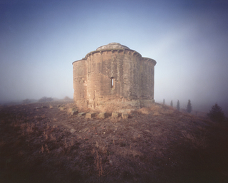
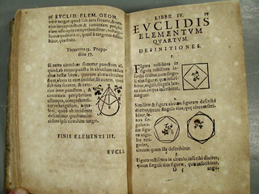
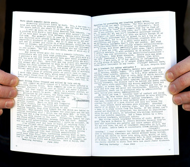

This is a consolidation of posts from an old blog listing calm, simple and esoteric topics. There are plenty of books, songs, hobbies, and curios for your delectation.
Willard Van Orman Quine
“Dad built himself a small ‘shack’ as he called it to be as far away from the family noise as possible. That way he could work to his heart’s content and not interfere with the noisy comings and goings of the likes of my brother and me and our friends. It was not wired for electricity, so when it was late or dark or stormy, he would light his kerosene lanterns and keep pounding away on his typewriter.”
Preludi Autunnali
Four piano songs by Gian Francesco Malipiero. Solemn chords evocative of Mompou, with plaintive notes of birdsong. Written in 1914.
Manual Coffee Grinder
From beans to cup.
Anderson Japanese Gardens
Public garden on fourteen acres in Rockford, Illinois. Meticulous. Full of calming streams and a real teahouse.
Ermita

Sebastian Schutyser photographed abandoned Spanish hermitages (ermita) using a pinhole camera.
Class: A Guide Through the American Status System
Paul Fussell’s book about the way we act is acerbic, revealing, and funny.
Spencerian Penmanship
A fine slender hand. Mott Media sells copybooks.
mnmlist.com
Monotonous but respectable.
The Slow Movement
Resists the homogenized, the rushed, and the tasteless.
черный хлеб
Russian black bread.
Grigory Perelman
Proved the Poincaré conjecture, and now keeps to himself and will not stoop to accept prizes.
Lei Cidade Limpa
“In 2007, the world’s fourth-largest metropolis and Brazil’s most important city, São Paulo, became the first city outside of the communist world to put into effect a radical, near-complete ban on outdoor advertising.”
Euclid’s Elements

“As Littlewood said to me once [of the ancient Greeks], they are not clever school boys or ‘scholarship candidates’, but ‘Fellows of another college.’” — Godfrey Harold Hardy
José Gonzalo Zulaika
Better known as Aita Donostia, he was a priest and musicologist who studied Basque folklore. Wrote music extensively, including piano transcriptions of Basque folk songs.
The Book of Tea
Kakuzo Okakura describes the history, varieties, and ceremonies of tea.
Frösöblomster
Wilhelm Peterson-Berger wrote these warm, lyrical piano songs in the rustic house he built on the island of Frösö.
Cardboard Wallet
Easy to make and sturdy. A simple vehicle for plain old cash.
Austere Sensibilities
“Even when she had to make some one a present of the kind called ‘useful,’ when she had to give an armchair or some table-silver or a walking stick, she would choose ‘antiques,’ as though their long desuetude had effaced from them any semblance of utility and fitted them rather to instruct us in the lives of the men of other days than to serve the common requirements of our own.” — Proust
Pocket address book
The Scully company makes a nice plain one.
Hitsuzendo
Zen calligraphy.
Friggebod
Swedish mini-house.
Minimal dishes
Keep only one type of utensil per person.
Heavy wooden doors
Reassuring.
Microfilm
Unlike digital mass storage, microfilm doesn’t suffer file format conflicts or require software management. It is legible with just a magnifying glass and light.
Komponierhäuschen
Mahler wrote music in “composition huts” — single room huts with little more than a piano inside.
Manuel Blancafort
Federico Mompou’s friend and fellow composer. Wrote tranquil piano music like Peces de joventut. His music served as a “diary without words” for his nature walks.
Read Lyn Rodley’s account of hermitages carved in the 9th and 10th centuries.
Abacus
It’s not a circuit; it does its job in full view.
Straight razor
Rather terrifying, but probably manageable if you’ve grown up using one. Promotes an ethos of quality and maintenance over quantity and disposal. Honing and stropping must feel satisfying.
Desert Solitaire by Edward Abbey
“About ten years ago I took a job as a seasonal park ranger in a place called Arches National Monument near the little town of Moab in southeast Utah. Why I went there no longer matters; what I found there is the subject of this book.”
Candle reflector
Perhaps a few mirrored sconces would be enough to see by.
Land
In a world of paper millionaires, true wealth is immovable property.
Patina
A worn library counter, hollowed stairs, darkened chair arms.
Leather shoes
For those who find brand logos distasteful.
Chicken stock
Don’t waste the chicken carcass. Make your own stock.
Primary sources
For instance NOAA and C-SPAN in the US.
Posole
One way to prepare tough indian corn is to turn it into hominy, then cook it in a posole.
Ecce ancilla Domini
Perhaps the perfect piano song. Written by Jehan Alain.
Alghe
A gently reflective piano song by Mario Castelnuovo-Tedesco. He wrote it in 1919.
Whetstone
The best are made of coticule.
Skellig Michael clocháns
Read “The Forgotten Hermitage of Skellig Michael” by Walter Horn.
A Guide to Civilized Loafing
Written by H. A. Overstreet. A refreshing, enthusiastic viewpoint from the 1930s.
Hand Tools: Their Ways and Workings
Use hand tools and feel the quality of wood. No electric cords, no rush. Aldren Watson wrote this excellent book.
From a Monastery Kitchen
It’s a cookbook written by Victor-Antoine D’Avila-Latourrette (that itself is a mouthful). The recipes are minimalist.
Wool military blanket
Plain gray blankets are available cheap (< $20) from army surplus.
Humble root vegetables
Parsnips, turnips, and rutabagas are cheap and underused.
Pencil sharpener
Wall-mounted manual sharpeners are getting rarer.
Sowiesoso
Cluster’s 1976 album is music floating from far away down a dirt path through golden haze.
Enduring Seeds
“Native American Agriculture and Wild Plant Conservation.” Gary Nabhan writes about seeds’ rich genetic information.
Spring, Summer, Fall, Winter…and Spring
In this movie, a hut floats in the middle of a placid lake. An old monk raises a boy.
Everett Ruess
A teenager who wandered the deserts of the southwest United States and made woodblock prints of what he saw. He disappeared in 1934 at age 20. His diaries survive.
DJ Krush
Calm, atmospheric trip-hop.
The Way Things Go
A short movie showing levers and flames and pendulums doing their things.
Public mailbox
Those tough blue metal boxes accept simple hand-addressed letters.
Skillet cornbread
1 cup cornmeal, 1 cup flour, 2 tsp baking powder, ½ tsp baking soda, 1 egg, 1 cup plain yogurt, 3 Tbsp honey, 3 Tbsp melted butter
Bake in a skillet at 350° for 20 minutes.
Parthenocissus tricuspidata
Boston Ivy.
Walden
A pond and a book. At least the pond is free of contradictions.
Taiyo Yuden CD-R
CDs are reliable and accurate, but burnables can lose data in a few years. Taiyo Yuden is known for longevity.
White tea
A delicate variety.
Westerly windows facing trees
The sunset dapples through.
Reel mower
Quiet and effective.
Brother Nikanor
“Milk is not produced by computers, bread doesn’t come from a good company PR. It is necessary to plow, sow and harvest before that.”
Beans
They are cheap, nutritious, and their growth improves the soil.
Vipassana
llinois Vipassana Meditation Center offers ten day donation-supported retreats. It’s calm, but is it useful?
Dwelling Portably

An 80s zine describing how to live without a fixed home. Bert and Holly Davis wrote it on their manual typewriter.
Morton Feldman
A composer whose later works are long, sparse, and quiet. Recommended listening: For Philip Guston (it is over 4½ hours long).
Beeswax candles
They smell good and are easy to make with just a lump of wax and some wicks.
Yeast-risen bread
How relaxing to knead and rise and bake.
Building with Stone
The world’s madness is fleeting; stones endure. Read Charles McRaven’s book.
2700 Kelvin light bulb
For bulbs Kelvin measures color: lower redder, higher whiter/bluer. 2600-2800 is soft cozy light.
Interest
Money’s unskilled labor.
Cloth cords
Electrical cords wrapped in cloth rather than plastic.
Ludwig Wittgenstein: There Where You Are Not
Wittgenstein was a brilliant uncompromising 20th century philosopher. This book by Michael Nedo provides biographical pictures, including details of W’s cabin in Skjolden, Norway.
Cast-iron skillet
Heats food evenly. Repays its modest upkeep.
Bakelite phone
Tough old rotary beasts with real mechanical ringers.
Go
A board game with just one type of move.
Nicolas Bourbaki
Not a person, but a group of men who wrote a multi-volume, austere, unified exposition of math.
Toru Takemitsu
Wrote haiku-like music blending Eastern sensibilities with Western instruments.
Swingline 747 stapler
Solid metal. Indestructible.
Mansfield College Library
Old, with portraits and nooks.
The Man Who Planted Trees
“In order for the character of a human being to reveal truly exceptional qualities, we must have the good fortune to observe its action over a long period of years.”
Edsger Dijkstra
He designed algorithms, and emphasized patience and exactness. See the video Discipline in Thought.
網師園
The Garden of the Master of Nets is located in Suzhou, China. Placid water, circular windows, ancient calligraphy.
Manual typewriter
Isolation and focus can improve writing. A typewriter removes distractions.
RZA beats
Disjointed atmospheric instrumentals provide urban calm.
Grain mill
Try a cast-iron manual grinder. Make cornmeal, etc.
Three sisters garden
Corn provides a stalk for beans to climb. Beans fix nitrogen. Squash smothers weeds and cools the soil.
Chalkboard
Easy to use, quiet, durable. A piece of slate.
Blank analog watch
E.g. Mario Botta’s single-handed watch.
Plainchant
It is free of instruments, meter, or polyphony. One can learn Gregorian chant by the Solesmes method.
Im Lauf der Zeit
Directed by Wim Wenders. A slow, hypnotic story of two men traveling back-roads by truck.
Déodat de Séverac
Loved nature, and wrote sunny, picturesque piano music. Suggested listening: En Vacances.
The Twelve Seasons
A book by Joseph Wood Krutch about people’s relation to non-anthropomorphic nature.
Copper bike
Just a frame, wheels, and a chain.
пустынь
Poustinia in English. A small, sparsely furnished cabin for solitary retreats.
Dick Proenneke
A survivalist so skilled he creates his own tools and a snug cabin in Alaska. He filmed himself for the documentary Alone in the Wilderness.
Federico Mompou
He wrote delicate, meditative piano music. Suggested listening: Musica Callada.
Récoltes et Semailles
The autobiography of mathematician Alexander Grothendieck. He describes the simplicity and poetry of modern abstract math. There is no complete English translation yet.
Cheap. Fast. Good!
A cookbook by Beverly Mills and Alicia Ross. Its title is accurate.
Ryōkan Taigu
A buddhist monk who left the monastery to live in a hut outside of town. He wrote poems about his daily life.
Into Great Silence
A three-hour, mostly wordless documentary by Philip Gröning about the Carthusian monks. They live closely with wood, stone, cloth, and the seasons.
Erik Satie
A composer of understated gentle piano music. Suggested listening: Cinq Nocturnes.